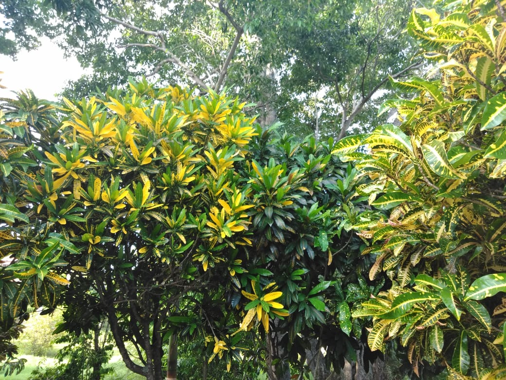

Joanna-Joy Gray
I am a 21 year-old young lady who loves God, family and friends, reading and nature. I am in my third year at UWI Mona, where I am studying Software Engineering and Management Studies. The INFO2180 course drew my attention because I have been interested in and have sought to learn web development from my high school and, particularly, sixth form years. The course is an ideal opportunity for me to finally complete a full course on the topic. I am excited to learn and understand more about web development as well as to progress in creating more advanced websites.
Speaking of nature, here is a picture of some Croton trees that I took.
